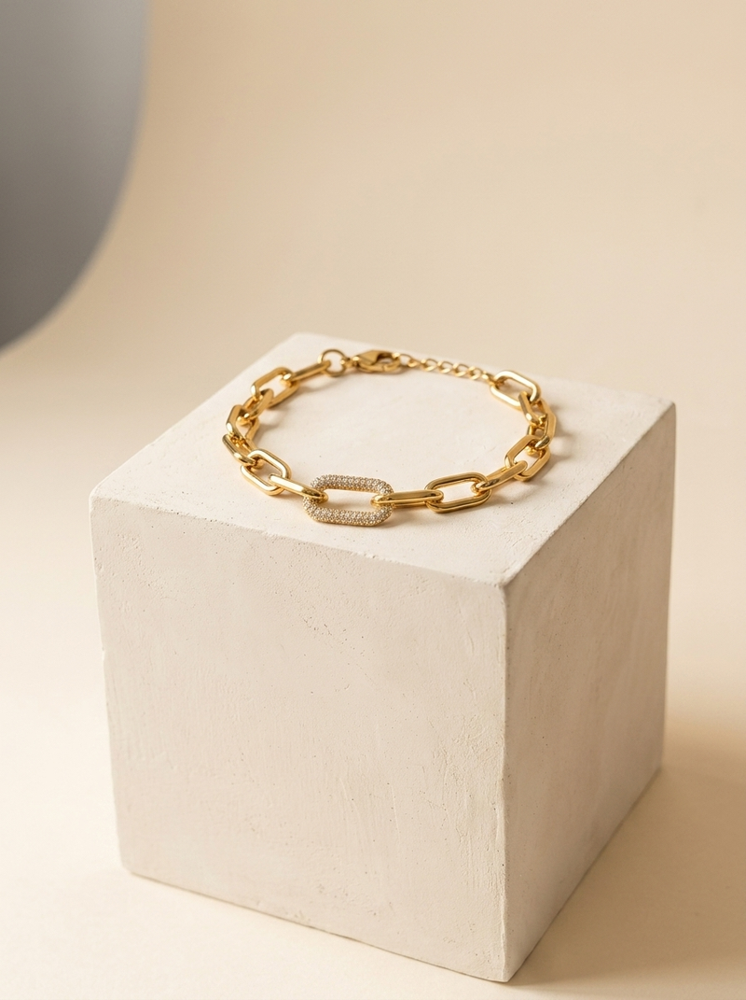
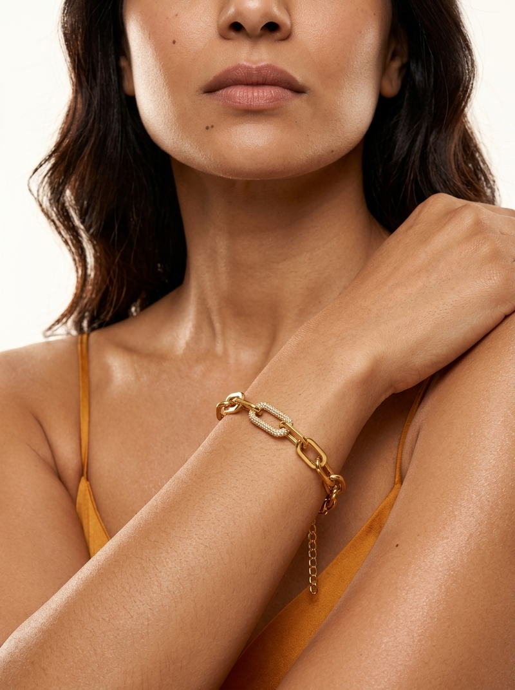
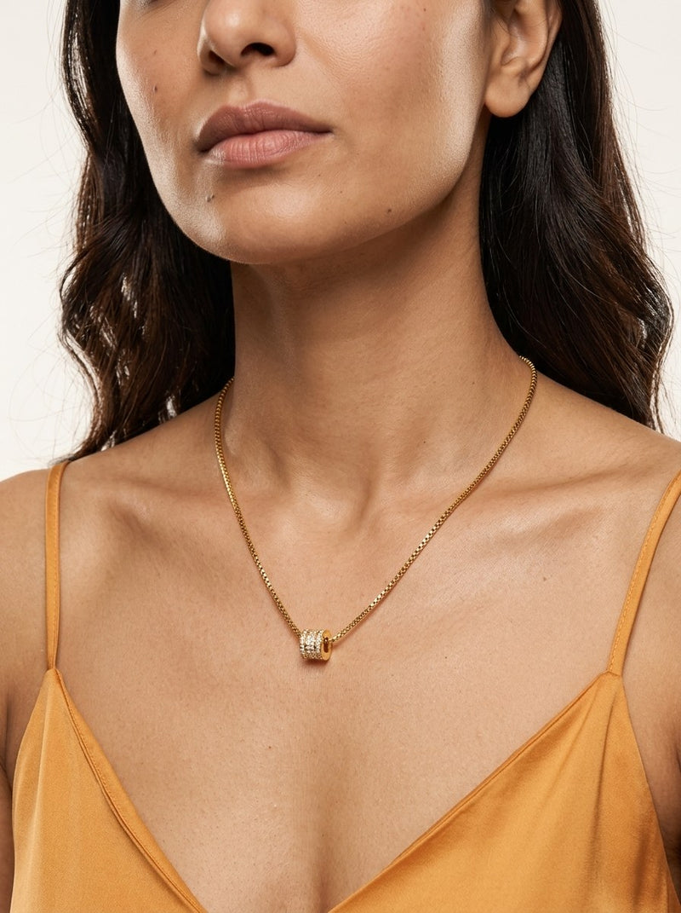

Both hooks I wrote were textbook “left-brain” advertising — isolated product feature, on-screen text, voiceover, no character, no place, no dialogue. System1’s study of 200 ads found those are precisely the features that correlate with failing. Over 80% of ads never clear the threshold below which business impact is roughly zero. You were reacting to something real.
Four findings. The first two explain the rejections; the second two decide what replaces them.
Orlando Wood’s Lemon (IPA/System1, 200 ads) splits advertising into left-brain features — flatness, isolated product features, on-screen text, voiceover, abstraction — and right-brain features: whole scenes, characters, a sense of place, dialogue, humour, expressions, cultural reference. The finding is blunt: “the greater the number of left-brain features, the less likely the ad is to achieve a strong Star rating.” Star rating predicts market-share growth. More than 80% of ads never clear 3 stars, below which business impact is minimal or zero.
My two scripts had: a product feature in macro, on-screen spec chips, a voiceover, no character, no room, no dialogue, no other person. That is the losing list, almost item for item.
System1 × TikTok × WPP Media’s 2026 Creator Effectiveness Playbook — 1,217 paid ads, 8 markets, 182,550 respondents, ~$70m of spend — separates showmanship (characters, storytelling, humour, recognisable environments) from salesmanship (on-screen text, hard CTAs, facts and figures). Showmanship raises emotional response. Salesmanship reduces it by 7–12%.
My last script was wall-to-wall salesmanship: spec chips, price chips, a fact stack, a hard CTA. Also from the same study: the most entertaining creator ads score 2.7 stars against 2.2 for the least entertaining, and entertainment “levels the playing field across creator size” — a small creator with a funny idea beats a big creator with a boring one. That is the whole argument for Sejal.
I justified both scripts partly on “it has to work on mute — most people watch without sound.” That figure is from the Facebook-feed era. Instagram’s own data is that roughly 80% of Reels are watched with sound ON. I built a constraint into two scripts on a number that doesn’t apply to the format we’re making.
It changes the brief: design so the visual gag still lands silently, but write the line as the payoff and stop neutering the audio. Captions stay — they lift completion — but as dialogue and punchline cards, not spec bullets.
System1’s work on fluent devices — a character or bit reused across a campaign:
| With a fluent device | vs without |
|---|---|
| Average star rating | 2.4 vs 1.9 |
| More likely to grow market share | +37% |
| More likely to grow profit | +30% |
| Brand recognition | 92% vs 86% |
| Share of US ads currently using one | ~4% |
Usage has collapsed from 41% of IPA effectiveness entries in 1992 to about 4% today — so it is both the best-evidenced structural choice and an abandoned one. At ₹3,000/day it is also the cheapest: a character gets more effective every time it runs, at no extra production cost. The Indian proof is right there — Kusha Kapila built a career on one aunty, Dolly Singh on one mother, both invented from inside a media office with no budget.
Instagram’s ranking signals have moved. Sends per reach — DM shares — carry roughly 3–5× the weight of a like for reaching non-followers, because a share is a personal vouch. Comments have fallen to around 3% of ranking weight, from ~15% in 2023.
My “Guess which one” hook was engineered to farm comments. It was optimising a signal that has collapsed. In India specifically, the share trigger is a Reel that lets the sender say something about a third person — this is literally you, this is literally my mother. Every concept below is built to be forwarded to a family WhatsApp group.
A live Meta Ad Library pull across the Indian jewellery category found GIVA running ~423 active ads, Palmonas ~678, Rubans ~127 — and almost every one of them is selling a percentage off. Entertainment-led paid creative in this category is effectively an empty lane. Even the Indian brands with famously funny organic voices run boring paid ads. Being funny here isn’t an indulgence; it’s the only uncontested position left at your price point.
Every one is shootable by Sejal alone, with a phone, a tripod and one afternoon. No crew, no actors, no props budget. Every one has a character, a room and dialogue — the three things the last two scripts were missing. And in every one, the joke cannot exist without the product, which is the condition under which humour helps direct response rather than hurting it.



Then she just shows it. One-handed lobster clasp click in close-up. “It’s 18K gold-plated over surgical steel, it’s nineteen ninety-nine, and I haven’t taken it off since I got it.”
Why this one. It parodies the exact demonstration format you rejected twice — and then delivers the demonstration anyway. So it is simultaneously the crazy ad and the rational ad, which means it carries the least downside risk of anything on this list. The humour–product fit is total: the joke is about jewellery ads, so it cannot be lifted off the product.
Chair two, different drape, adjusting glasses: “Is it gold?” Chair one: “It is 18K gold-plated. Over surgical steel.” Chair three says nothing, picks it up, holds it to the light, nods once. Chair one: “Approved.”
Why this one. This is the campaign, not the ad. The Committee can convene on every SKU you will ever launch — and the fluent-device evidence says that is worth half a star, +37% on share growth and +30% on profit growth, at zero extra production cost. Three costume beats, one tripod, one table. If you want one decision that pays for three years, it is this one.
“Type two —” she’s an aunty, suspicious, already grabbing the wrist: “asli hai?” “Type three —” a cousin, reaching for the clasp: “ek din ke liye de de.” Final shot, flat to camera: “Bold Nocturne. Nineteen ninety-nine. Type three is not getting it.”
Why this one. The most reliably performing native structure on Indian Reels, and the lowest execution risk here — each cut is a change of posture, not costume. It also disposes of the “is it real gold” objection inside the comedy rather than arguing with it. Built to be forwarded: every viewer knows a Type Three.
Long beat. She looks off-camera. “It makes every other thing I own look like it isn’t trying.” Cut: she dumps a fistful of thin, sad chains into a drawer and shuts it. “Sorry.”
Why this one. Volkswagen’s Lemon in twenty-eight seconds. It opens by promising a negative, which no jewellery ad ever does, and that is a genuine curiosity gap rather than a manufactured one. It is also the most elegant concept here — the one that keeps the brand looking like itself while the writing does the work. If “crazy” worries you, this is the one.
Pull back to an ordinary bedroom. “It’s the grade of steel they use for things that go inside people.” Beat. “We plated it in 18K gold and made a bracelet out of it. Because we have a problem.” Cut: she’s wearing it, entirely normally, drinking chai.
Why this one. It uses the single most underused true fact in your catalogue — it is in your own product copy and no competitor is saying it. The comedy is the register drop, not a gag, so the brand never looks silly. Zero props.
Cut to an ordinary living room, ordinary light, flat to camera: “I bought it in March. It’s twenty-one forty-nine. But it looks like an heirloom, and honestly that’s the whole job.”
Why this one. The register drop is both the joke and the positioning statement — and it is legally clean, because “looks like an heirloom” is a claim about appearance, not about value or material. It is also the only concept here that leads with the chain rather than the bracelet.
Shoot 01 — “Okay, that’s how these ads usually go.” It is the only concept that is crazy and keeps a working product demonstration inside it, so if the comedy doesn’t land the ad still sells. Given the last two attempts missed your taste, I’d rather hand you something with a floor.
But build 02 — The Bracelet Committee. The evidence on recurring characters is the strongest structural finding in any of this research, and almost nobody uses it any more. One aunty, reused across twelve ads, is worth more than twelve clever one-offs — and every future script starts half-written instead of blank.
Binet & Field’s IPA work — 1,200+ case studies — found emotional campaigns deliver very large business effects on new customers in 31% of cases against 5% for rational ones. But their actual prescription is a split, not a replacement: emotional creative wins long-term, rational creative still drives short-term response.
So the crazy ad is not a substitute for a product ad. Run one of these alongside a plain, well-made demonstration cut — which is essentially the script I already wrote, and which is now worth keeping rather than deleting. The mistake was making it the only thing, not making it at all.
Pick a number and I’ll rebuild the full package around it — beat sheet, shot list, Sejal’s read sheet, caption file, compliance pass. If none is right, say which is closest and I’ll go again: these six are drawn from fifteen, and the rest are on the bench.
Never “waterproof” · never “18K gold” for plated stock · a tap, never a pool · no wear-log claim she can’t support · any spoken price carries the ₹150 delivery · #Ad in the top third for a third of the runtime · no named competitor · no false urgency. ASCI reviewed influencer ads in FY26 and found 97% broke the rules — almost all of it disclosure. It is ten seconds of work to not be in that number.